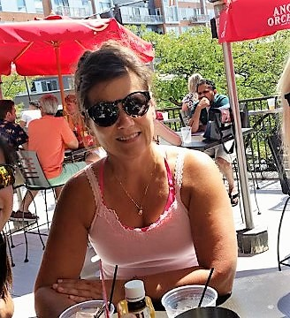

About Me

My name is Susan Marek. I am married to Dave, we have two daughters: Grace, age 14 and Zoe, age 20. I enjoy curling, gardening, yoga and serving on my children's activity boards. Whitney is our beloved rescue dog, a spunky low rider!
In the early 80's, I graduated with degrees in Chemical Engineering and Physical Sciences Education from the University of Minnesota. Post graduation took me to Stanford for three years where I was a research scientist in the field of polymer development. Returning to Minnesota, I worked in polymer research at the U of MN, then moved into the plastics industry for 15 years.
I took a break from engineering while raising young children - during this time I became more involved in my hobby - teaching fitness classes. For 10 years, I worked as a fitness professional and provided software support to the Chaska Parks and Recreation Department.
Connect with Me